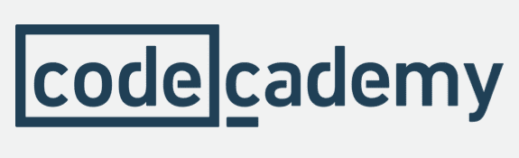
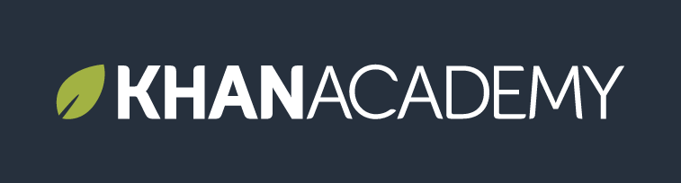
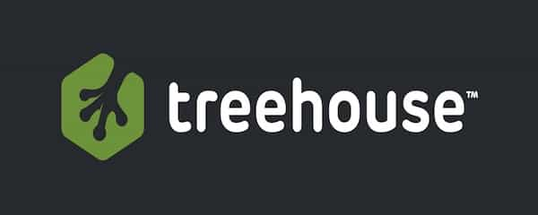

< < < Back
6 Websites You Can Use To Become a Web Developer Today – Return Of Kings
Learning to become a web developer is one of the best investments you can make. If you’re a writer, you’ll be able to design every aspect of your blog with total creative control. If you’re in high school or younger, you’ll be able to make as much if not more money than your parents with skills that are in high demand. So instead of being all talk like a word warrior, you’ll become an actual man of money at any age. If you’re a career professional, you’ll add another skill to your set for you to ask for a raise or better: start your own business and begin a new life of freedom.
Learning code is easy if you’re willing to put the time in and invest in yourself: the best investment you can make. Think of all the wasted hours watching TV, and playing video games. There is no return for these activities, so ideally they should have no place in your life. It’s “dead time“—you aren’t actually dead, but you aren’t living your life either. You’re living vicariously through the adventures of another, even if the controller is in your hands. You can become a fully fledged web developer in 4-6 months if you’re able to remove distractions from your life and focus on a brighter future for you.
Online education is becoming a massive industry. People just like you are learning that there isn’t a reason to go to college anymore, and it’s no longer a safe place for men to further their skills. If you go to college your chances of catching a false rape allegation increase dramatically, and you’ll always be looked at as a predator: even if you’re found innocent. Trust me, I’ve had a case against me before. Think about the mattress girl hoax as a real life example of what can happen. You’ll also leave school with debt up to your eyeballs, with no skills to your name. Instead of going to school for a piece of paper, learn actual skills to pay the bills, online. Below are the six best resources to learn coding online.
1. Code Academy

Price: Free | Premium option available
Code academy is the first resource to visit if you want to give coding a run for it’s money. The courses are free and easy to jump right into and begin learning. Instead of video courses, lessons are taught via text, a preferred method to some so that you can learn at your own pace, instead of having to pause and re-watch videos. Think of Code Academy as an interactive textbook. They offer a wide variety of courses in code from html, to JavaScript and SQL.
One downside of code academy is the content is rather shallow compared to the others listed.The premium option does not get you anything except for a few quizzes that won’t increase your knowledge of the subject. Once you finish with the free material, move on to another choice below that will offer you more depth. Code Academy is great for the hobby coder interested in getting their feet wet in a new discipline.
2. Khan Academy

Price: Completely Free Forever
Khan Academy is the brainchild of Sal Khan, who created Khan Academy after tutoring his young cousin in mathematics. His lessons were so helpful other friends and family wanted his tutoring. He took his lessons to YouTube, then grew his following enough to receive funding to create the non-profit Khan Academy.
Khan academy is new to software and coding, the program is still evolving. While Khan is not as good as the for-profit code websites, it still provides a strong starting point for those who are in the early stages of their education. They have the most developed math program of any online resource, and a variety of other subjects including entrepreneurship, economics, and sciences. With over 6,500 videos and growing, you could easily spend a year learning on Khan Academy and emerge significantly better off than your college counterparts.
3. Lynda
Price: $24.99 monthly | Other options available
Ten Day Trial available
Lynda is the best resource for a complete learning platform. Lynda goes beyond coding by offering courses in IT, graphic design, computer aided drafting(CAD), Microsoft office, and almost anything you would want to learn. They include student playlists that can be used to put together courses in any manner you see fit. By grouping courses by themes in playlists, you’ll be able to take the exact courses you want and plot your education your way. Also included are certificates of completion for your records and bragging rights.
Lynda is all video based with some quizzes along the way to gauge your performance. The quizzes aren’t difficult and don’t really offer much, so it’s up to you to watch your progress and determine when you’re ready to proceed. The only downfall of Lynda is that it’s all lectures, videos, and examples, so any application of information learned will need to be executed by you. Even still, Lynda has a course for almost anything you would want to learn and is a mainstay in continued education.
4. Treehouse

Price: $25.00 monthly
Seven day trial available
Treehouse is the best resource to learn code online. They have broken up their courses into tracks based on certain goals you want to achieve. For example, there is a forty hour long track to learn all aspects of web design including graphic design, a forty-five hour long track to learn all aspects of JavaScript, and many others.
Treehouse’s greatest strength comes from it’s learning style of watch, quiz, and execute. After each lesson not only do you take a quiz on what was just taught, the next step is writing the code yourself in an interactive code engine. This allows you to see in real time if your code is correct and how it looks in a visual format.
5. Code Avengers
Price: 29$ a month
Seven day trial available
Code avengers began as a pay per course training program, then switched to a monthly subscription model after having less success than it’s counterparts. They have taken the idea of tracks from Treehouse and implemented them into their own courses.
While Treehouse does have much better teachers and courses, Code Avengers offers certifications of completion that can be used on a social media profile, printed out, or advertised on your LinkedIn account for potential employers. Being able to show completed coursework will go a long way when employers now seek specific skills, instead of over saturated degrees in non technical programs.
Psychology majors I’m writing to you.
6. Code School
Price: 29$ a month
10 free courses available
Code School offers a few brief free courses, then jumps to paid courses after giving you the smallest amount of education. Out of all of the sources listed, code school is the least recommended. Code School doesn’t stand out anywhere specific, and seems to have all the features of Treehouse except not as well polished. Code School is another option you can try to see what program you’re most receptive to. It doesn’t matter which program is best, it matters which program you can use to excel at.
Code School does video courses followed by interactive coding and quizzes. The videos are often spoken quite rapidly, with distracting themes such as as courses taught while on a mountain wearing full ski attire to fit a particular theme. This doesn’t make the course better, and actually becomes a major distraction. The interactive code engine also included bugs that required restarting a thirty minute challenge from scratch. Another bug example I found, I was able to bypass a challenge by pressing the proceed button without having to do any work.
Out of all five sources, Lynda hands down is the best option by far. Lynda is the Netflix of learning with enough content to last you years, and they consistently come out with more every week. If you had only one option to choose from, Lynda would be it. If you took a year off of school, and spent twenty hours a week using Lynda, you’d have a wide array of skills attractive to any employer in a short time.
Online learning is becoming the future of education: Priced thousands less than college, learning at your own time, all skills and no filler, there is unlimited upside to your career and life if you decide to take your education in your own hands and begin learning your way.
Read More: How To Get A Good Education Without Going To College